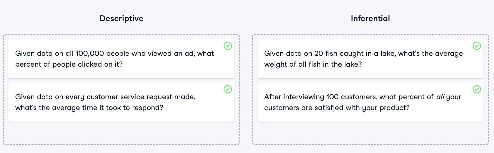
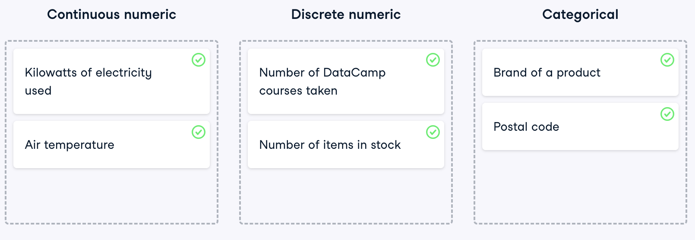
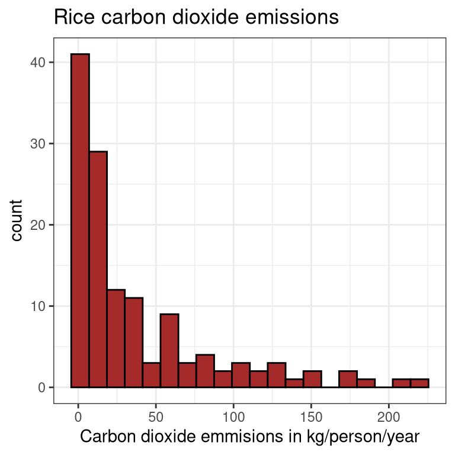
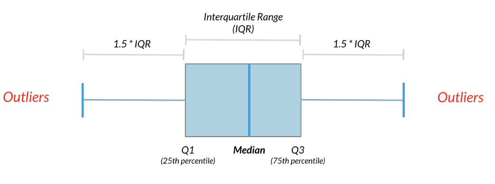

1 Summary Statistics
Summary statistics gives you the tools you need to boil down massive datasets to reveal the highlights. In this chapter, you’ll explore summary statistics including mean, median, and standard deviation, and learn how to accurately interpret them. You’ll also develop your critical thinking skills, allowing you to choose the best summary statistics for your data.
What is statistics? - video
1.1 Descriptive and inferential statistics
Statistics can be used to answer lots of different types of questions, but being able to identify which type of statistics is needed is essential to drawing accurate conclusions. In this exercise, you’ll sharpen your skills by identifying which type is needed to answer each question.
Note
Knowing the type of statistics you need to answer your question will help you choose the appropriate methods to get the most accurate answer possible.
1.2 Data type classification
In the video, you learned about two main types of data: numeric and categorical. Numeric variables can be classified as either discrete or continuous, and categorical variables can be classified as either nominal or ordinal. These characteristics of a variable determine which ways of summarizing your data will work best.

Note
These skills will be important when it comes to choosing summary statistics and visualizations.
Measures of center - video
1.3 Mean and median
In this chapter, you’ll be working with the food_consumption dataset from 2018 Food Carbon Footprint Index by nu3. The food_consumption dataset contains the number of kilograms of food consumed per person per year in each country, food category column food_category, the amount of consumption, and its carbon footprint (co2_emissions) measured in kilograms of carbon dioxide, or CO2.
dplyr is loaded for you and food_consumption is available.
food_consumption <- readRDS("./data/food_consumption.rds")
food_consumption |>
head() |>
kable()| country | food_category | consumption | co2_emission |
|---|---|---|---|
| Argentina | pork | 10.51 | 37.20 |
| Argentina | poultry | 38.66 | 41.53 |
| Argentina | beef | 55.48 | 1712.00 |
| Argentina | lamb_goat | 1.56 | 54.63 |
| Argentina | fish | 4.36 | 6.96 |
| Argentina | eggs | 11.39 | 10.46 |
Instructions
- Calculate the mean of food consumption in kilograms for all countries in the
food_consumptiondataset.
food_consumption |>
summarize(mean_consumption = mean(consumption))# A tibble: 1 × 1
mean_consumption
<dbl>
1 28.1- Calculate the median of food consumption in kilograms for all countries in the
food_consumptiondataset. Is it the same as the mean?
food_consumption |>
summarize(mean_consumption = mean(consumption),
median_consumption = median(consumption))# A tibble: 1 × 2
mean_consumption median_consumption
<dbl> <dbl>
1 28.1 8.89The mean of food consumption is 28.11 kg. which is not the same as the median food consumption which is 8.89 kg.
- Calculate the mode of consumption for all countries in the
food_consumptiondataset by counting and sorting values descending.
# Calculate the mode of food consumption
food_consumption |>
count(consumption, sort = TRUE) -> MFC
MFC |>
head() |>
kable()| consumption | n |
|---|---|
| 0.00 | 31 |
| 0.01 | 18 |
| 0.02 | 13 |
| 0.04 | 11 |
| 0.05 | 7 |
| 0.94 | 5 |
The mode of consumption is 0.00 kg.
Note
You’ve calculated the mean, median, and mode of food consumption, offering valuable insights into consumption patterns.
1.4 Mean vs. median
In the video, you learned that the mean is the sum of all the data points divided by the total number of data points, and the median is the middle value of the dataset where 50% of the data is less than the median, and 50% of the data is greater than the median. In this exercise, you’ll compare these two measures of center.
The dplyr (Wickham et al. 2023) and ggplot2 (Wickham et al. 2024) packages are loaded and food_consumption is available.
- Filter
food_consumptionto get the rows wherefood_categoryis"rice". Create a histogram ofco2_emissionfor rice using theggplot()function.
food_consumption |>
filter(food_category == "rice") |>
ggplot(aes(x = co2_emission)) +
geom_histogram(bins = 20, fill = "brown", color = "black") +
labs(title = "Rice carbon dioxide emissions",
x = "Carbon dioxide emmisions in kg/person/year") +
theme_bw()
Take a look at the histogram of the \(\text{CO}_2\) emissions for rice you just plotted. Which of the following terms best describes the shape of the data?
No skew
Left-skewed
Right-skewed
Summarize the data to get the mean and median of
co2_emission, calling themmean_co2andmedian_co2.
food_consumption |>
filter(food_category == "rice") |>
summarize(mean_co2 = mean(co2_emission),
median_co2 = median(co2_emission))# A tibble: 1 × 2
mean_co2 median_co2
<dbl> <dbl>
1 37.6 15.2Given the skew of this data, what measure of central tendency best summarizes the kilograms of \(\text{CO}_2\) emissions per person per year for rice?
Mean
Median
Both mean and median
Note
The mean is substantially higher than the median since it’s being pulled up by the high values over 100 kg/person/year.
Measures of spread - video
1.5 Variance and standard deviation
Variance and standard deviation are two of the most common ways to measure the spread of a variable, and you’ll practice calculating these in this exercise. Spread is important since it can help inform expectations. For example, if a salesperson sells a mean of 20 products a day, but has a standard deviation of 10 products, there will probably be days where he will sell 40 products, but also days where he will only sell one or two. Information like this is important, especially when making predictions.
The dplyr and ggplot2 packages are loaded, and food_consumption is available.
Instructions
- Calculate the variance of
co2_emissionin thefood_consumptiondataset.
food_consumption |>
summarize(var_co2_emission = var(co2_emission))# A tibble: 1 × 1
var_co2_emission
<dbl>
1 23134.- Calculate the standard deviation of
co2_emissionin thefood_consumptiondataset.
food_consumption |>
summarize(var_co2_emission = var(co2_emission),
sd_co2_emission = sd(co2_emission))# A tibble: 1 × 2
var_co2_emission sd_co2_emission
<dbl> <dbl>
1 23134. 152.1.6 Quartiles, quantiles, and quintiles
Quantiles are a great way of summarizing numerical data since they can be used to measure center and spread, as well as to get a sense of where a data point stands in relation to the rest of the dataset. For example, you might want to give a discount to the 10% most active users on a website.
In this exercise, you’ll calculate quartiles, quintiles, and deciles, which split up a dataset into 4, 5, and 10 pieces, respectively.
The dplyr package is loaded and food_consumption is available.
Instructions
- Calculate the quartiles of the
co2_emissioncolumn offood_consumption.
food_consumption |>
summarize(Quartiles = quantile(co2_emission, probs = seq(0, 1, 0.25)))# A tibble: 5 × 1
Quartiles
<dbl>
1 0
2 5.21
3 16.5
4 62.6
5 1712 - Calculate the quintiles of the
co2_emissioncolumn offood_consumptionthat split up the data into 5 pieces.
food_consumption |>
summarize(Quintiles = quantile(co2_emission, probs = seq(0, 1, 0.20)))# A tibble: 6 × 1
Quintiles
<dbl>
1 0
2 3.54
3 11.0
4 25.6
5 100.
6 1712 - Calculate the quantiles of
co2_emissionthat split up the data into ten pieces.
food_consumption |>
summarize(Deciles = quantile(co2_emission, probs = seq(0, 1, 0.10)))# A tibble: 11 × 1
Deciles
<dbl>
1 0
2 0.668
3 3.54
4 7.04
5 11.0
6 16.5
7 25.6
8 44.3
9 100.
10 204.
11 1712
Note
While calculating more quantiles gives you a more detailed look at the data, it also produces more numbers, making the summary more difficult to quickly understand.
1.7 Finding outliers using IQR
Interquartile range, or IQR, is another way of measuring spread that’s less influenced by outliers. IQR is also often used to find outliers. If a value is less than \(\text{Q}_1 - 1.5 \times \text{IQR}\) or greater than \(\text{Q}_3 + 1.5 \times \text{IQR}\), it’s considered an outlier. In fact, this is how the lengths of the whiskers in a ggplot2 box plot are calculated.

In this exercise, you’ll calculate IQR and use it to find some outliers. Both dplyr and ggplot2 packages are loaded and food_consumption is available.
Instructions
- Compute the first and third quartiles of
co2_emissioninfood_consumptionand store these asq1andq3. Calculate the interquartile range (IQR) ofco2_emissionand store it asiqr.
food_consumption |>
summarize(q1 = quantile(co2_emission, prob = 0.25),
q3 = quantile(co2_emission, prob = 0.75),
iqr = IQR(co2_emission))# A tibble: 1 × 3
q1 q3 iqr
<dbl> <dbl> <dbl>
1 5.21 62.6 57.4- Calculate the lower and upper cutoffs for outliers of
co2_emission, and store these aslowerandupper.
food_consumption |>
summarize(q1 = quantile(co2_emission, prob = 0.25),
q3 = quantile(co2_emission, prob = 0.75),
iqr = IQR(co2_emission)) |>
mutate(lower = q1 - 1.5*iqr,
upper = q3 + 1.5*iqr) -> ans
kable(ans)| q1 | q3 | iqr | lower | upper |
|---|---|---|---|---|
| 5.21 | 62.5975 | 57.3875 | -80.87125 | 148.6788 |
- Use
filter()to get countries with aco2_emissiongreater than the upper cutoff or aco2_emissionless than the lower cutoff.
food_consumption |>
filter(co2_emission > ans$upper |
co2_emission < ans$lower)# A tibble: 208 × 4
country food_category consumption co2_emission
<chr> <fct> <dbl> <dbl>
1 Argentina beef 55.5 1712
2 Argentina dairy 195. 278.
3 Australia beef 33.9 1045.
4 Australia lamb_goat 9.87 346.
5 Australia dairy 234. 334.
6 Albania beef 22.5 694.
7 Albania lamb_goat 15.3 536.
8 Albania dairy 304. 433.
9 Iceland beef 13.4 412.
10 Iceland lamb_goat 21.1 740.
# ℹ 198 more rows
Note
You’ve successfully calculated the IQR, and outlier cutoffs for \(\text{CO}_2\) emissions, and identified the outlier items with unusually high or low emissions. This analysis is key to understanding the impact of food consumption on the environment.